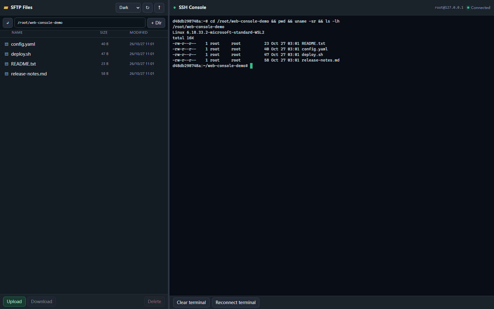
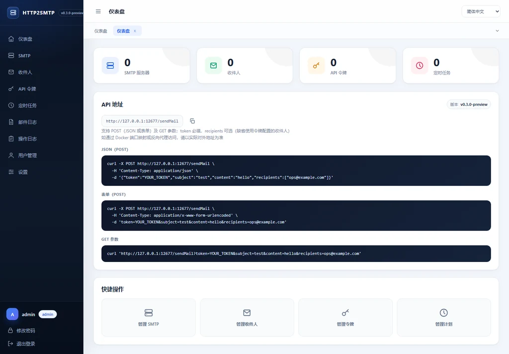
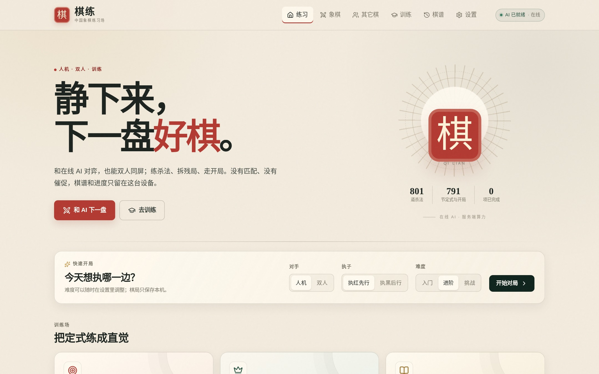
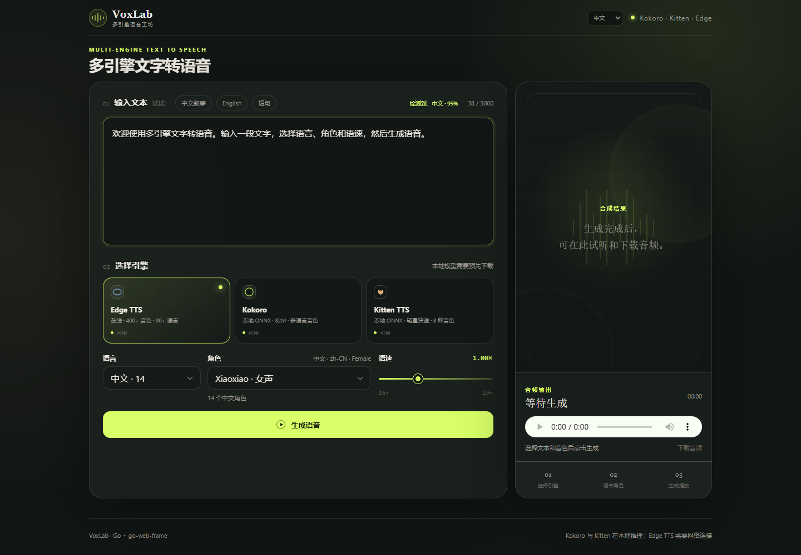

win-sshpass
跨平台的 SSH 客户端。支持密码、密钥和 Agent 认证，可以执行远程命令、 传输文件，也提供 Web SSH 和 MCP 接口。
- 交互终端、SFTP 与端口转发
- JSON、Go SDK 与 Agent 工具接口
Open source projects
主要使用 Go，也有 Web 应用和 PWA。 下面选了 6 个项目，附功能、版本和源码地址。
01 / PROJECTS
这些项目包括命令行工具、服务端组件和 Web 应用。 下面按项目说明主要功能、技术栈和使用入口。

跨平台的 SSH 客户端。支持密码、密钥和 Agent 认证，可以执行远程命令、 传输文件，也提供 Web SSH 和 MCP 接口。

把 HTTP 请求转成邮件的自托管服务。可以在网页里管理 SMTP、收件人、 API Token 和定时任务，应用直接调用 HTTP API 发信。
Go 编写的轻量 Agent SDK。用递增的事件序号同步流式输出， 支持多轮工具调用、历史保存和断线续传。
// policy lives on the route
ctx.Post("/api/admin/users", c.CreateUser).
WithMeta(
RequireAuth(),
RequirePermission("admin:create_user"),
)
// one filter enforces it
builder.Filter(&AuthFilter{})Go Web 后端框架。路由上可以声明认证、权限和限流，再统一处理； 同时内置泛型 ORM、缓存、SSE 和 WebSocket。
.WithMeta(...) 表达逐路由策略
中国象棋练习 PWA。支持人机对弈、双人同屏， 也包含杀法、残局和开局训练，训练内容可以离线使用。

Go 编写的文字转语音 Web 应用。支持 Kokoro、Kitten、Melo 和 Edge TTS， 可以选择音色、调节语速并下载音频。
02 / RELEASES
其中 4 个项目有 GitHub Release，共 51 个版本。 其余 2 个项目直接展示 main 分支。
03 / ABOUT
这一页收录了 6 个公开项目，主要使用 Go，另有一个 TypeScript PWA。 可以按下面的用途快速找到感兴趣的项目。
基础设施win-sshpass 和 HTTP2SMTP，用于 SSH 操作与邮件发送。
Go 开发组件go-agent-sdk 和 go-web-frame，用于 Agent 流式输出与 Web 后端开发。
Web 应用chess-train 和 go-tts，分别用于棋类练习和文字转语音。